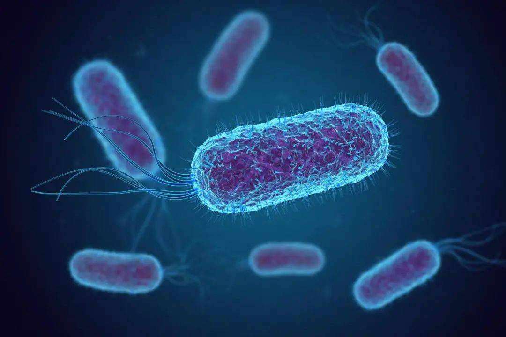

- Team
- Project
- Lab
- Model
- Parts
- Improvement
- Contributions
- Judging

In this system, Enemy are expected to secrete xylanase that hydrolyze xylan contained in the medium to produce arabinose, then attack Player by activating the arabinose induced suicide pathway in them.
First, we s
The lipid accumulation was also measured at 72 hours following dilution. In this time point, the culture had reached the stationary phase, and LDs were clearly detectable with Nile red staining for all tested strains, including the wild-type (Fig 2B). Lipid accumulation is known to increase in S. cerevisiae cells upon nutrient depletion (Werner-Washburne et al., 1993), and our results reveal that the difference between wild-type and TAG lipase deletion strains is considerably reduced in the stationary phase cells (Fig 2B). In the 72-hour time point, we did not observe a statistically significant difference between wild-type and the single tgl4Δ or double tgl3Δ tgl4Δ deletion cells. Single deletion of TGL3, which had the largest effect in the 24-hour time point, also led to increased LD staining intensity at 72 hours. We observed the highest intracellular lipid levels with the triple tgl3Δ tgl4Δ tgl5Δ deletion strain, and interestingly, in this time point, the zwf1Δ strain had considerably lower LD staining, comparable to the level of the wild-type strain (Fig 2B). Although the lipid levels of zwf1Δ strain were not lower in the 24-hour time point, ZWF1 deletion could be expected to result in decreased lipid synthesis, as Zwf1 is required to regenerate NADPH, a critical cofactor in fatty acid synthesis. Taken together, by preventing TAG degradation with triple deletion of TAG lipases, we have achieved a considerable increase in lipid production compared to the wild-type strain.

Figure 1. Nile red staining shows build-up of lipids in LDs upon TAG lipase deletions. Microscopy images showing the cells in brightfield image and the fluorescent signal of lipids stained with Nile red. The cells are from 24 hour time point after inoculation.

Figure 2. TAG lipase deletions result in greatly increased lipid accumulation in LDs. (A, B) Plots showing the mean Nile red fluorescence intensities in single cells from indicated strains. The samples were analyzed at 24 hour time point (A) and 72 hour time point (B). The bars show median and its 95% confidence intervals. ****, **, *, and ns note p-values <0.0001, <0.01, <0.05, and >0.05, respectively, of pair-wise comparisons with wild-type using Mann-Whitney U test.
In this system, red light was used to regulate the expression of AHL, which can bind to luxR, activating the expression of downstream relE (Pathway a). Since the red-light sensing system we used has already been verified by 2018 UCAS-China, and in our previous experiments, the functional validation of relE has also been demonstrated, thereby only the rest of the parts in this pathway, AHL-induced attack system, needed verifying. Therefore, to verify the AHL-induced suicide system in Enemy, a constitutive promoter was used to initiate the expression of luxI. (Pathway b).

The lipid accumulation was also measured at 72 hours following dilution. In this time point, the culture had reached the stationary phase, and LDs were clearly detectable with Nile red staining for all tested strains, including the wild-type (Fig 2B). Lipid accumulation is known to increase in S. cerevisiae cells upon nutrient depletion (Werner-Washburne et al., 1993), and our results reveal that the difference between wild-type and TAG lipase deletion strains is considerably reduced in the stationary phase cells (Fig 2B). In the 72-hour time point, we did not observe a statistically significant difference between wild-type and the single tgl4Δ or double tgl3Δ tgl4Δ deletion cells. Single deletion of TGL3, which had the largest effect in the 24-hour time point, also led to increased LD staining intensity at 72 hours. We observed the highest intracellular lipid levels with the triple tgl3Δ tgl4Δ tgl5Δ deletion strain, and interestingly, in this time point, the zwf1Δ strain had considerably lower LD staining, comparable to the level of the wild-type strain (Fig 2B). Although the lipid levels of zwf1Δ strain were not lower in the 24-hour time point, ZWF1 deletion could be expected to result in decreased lipid synthesis, as Zwf1 is required to regenerate NADPH, a critical cofactor in fatty acid synthesis. Taken together, by preventing TAG degradation with triple deletion of TAG lipases, we have achieved a considerable increase in lipid production compared to the wild-type strain.
As is shown above, the expression of RelB in Player depends on the on/off state of blue light, which can bind to RelE, blocking the growth inhibition of Player. Since RelBE operon we used has already been verified by 2009 SJTU-BioX-Shanghai, a reporter gene sfGFP was used to verify the expression of blue-light sensing system.
The lipid accumulation was also measured at 72 hours following dilution. In this time point, the culture had reached the stationary phase, and LDs were clearly detectable with Nile red staining for all tested strains, including the wild-type (Fig 2B). Lipid accumulation is known to increase in S. cerevisiae cells upon nutrient depletion (Werner-Washburne et al., 1993), and our results reveal that the difference between wild-type and TAG lipase deletion strains is considerably reduced in the stationary phase cells (Fig 2B). In the 72-hour time point, we did not observe a statistically significant difference between wild-type and the single tgl4Δ or double tgl3Δ tgl4Δ deletion cells. Single deletion of TGL3, which had the largest effect in the 24-hour time point, also led to increased LD staining intensity at 72 hours. We observed the highest intracellular lipid levels with the triple tgl3Δ tgl4Δ tgl5Δ deletion strain, and interestingly, in this time point, the zwf1Δ strain had considerably lower LD staining, comparable to the level of the wild-type strain (Fig 2B). Although the lipid levels of zwf1Δ strain were not lower in the 24-hour time point, ZWF1 deletion could be expected to result in decreased lipid synthesis, as Zwf1 is required to regenerate NADPH, a critical cofactor in fatty acid synthesis. Taken together, by preventing TAG degradation with triple deletion of TAG lipases, we have achieved a considerable increase in lipid production compared to the wild-type strain.
Based on the three systems designed in iGAME, we successfully constructed related pathways and characterized their functions. 1. Xylanase can hydrolyze xylan to produce arabinose, which can induce relE expression and inhibit bacterial growth. 2. AHL regulated by red light can induce relE expression, thereby inhibiting bacterial growth. 3. We have also designed a blue light-on system, which could be used to regulate the expression of downstream gene relB, which can combine with RelE to counteract the growth inhibitory function of RelE 
The lipid accumulation was also measured at 72 hours following dilution. In this time point, the culture had reached the stationary phase, and LDs were clearly detectable with Nile red staining for all tested strains, including the wild-type (Fig 2B). Lipid accumulation is known to increase in S. cerevisiae cells upon nutrient depletion (Werner-Washburne et al., 1993), and our results reveal that the difference between wild-type and TAG lipase deletion strains is considerably reduced in the stationary phase cells (Fig 2B). In the 72-hour time point, we did not observe a statistically significant difference between wild-type and the single tgl4Δ or double tgl3Δ tgl4Δ deletion cells. Single deletion of TGL3, which had the largest effect in the 24-hour time point, also led to increased LD staining intensity at 72 hours. We observed the highest intracellular lipid levels with the triple tgl3Δ tgl4Δ tgl5Δ deletion strain, and interestingly, in this time point, the zwf1Δ strain had considerably lower LD staining, comparable to the level of the wild-type strain (Fig 2B). Although the lipid levels of zwf1Δ strain were not lower in the 24-hour time point, ZWF1 deletion could be expected to result in decreased lipid synthesis, as Zwf1 is required to regenerate NADPH, a critical cofactor in fatty acid synthesis. Taken together, by preventing TAG degradation with triple deletion of TAG lipases, we have achieved a considerable increase in lipid production compared to the wild-type strain.
In order to enrich the diversity of our project, we also designed following pathways: 1. Direct kill：Enemy can express antibiotics, while Player can gain the antibiotic resistance with the light sensing system. 2. We also used different signal-inducing genes to enrich our project.
The lipid accumulation was also measured at 72 hours following dilution. In this time point, the culture had reached the stationary phase, and LDs were clearly detectable with Nile red staining for all tested strains, including the wild-type (Fig 2B). Lipid accumulation is known to increase in S. cerevisiae cells upon nutrient depletion (Werner-Washburne et al., 1993), and our results reveal that the difference between wild-type and TAG lipase deletion strains is considerably reduced in the stationary phase cells (Fig 2B). In the 72-hour time point, we did not observe a statistically significant difference between wild-type and the single tgl4Δ or double tgl3Δ tgl4Δ deletion cells. Single deletion of TGL3, which had the largest effect in the 24-hour time point, also led to increased LD staining intensity at 72 hours. We observed the highest intracellular lipid levels with the triple tgl3Δ tgl4Δ tgl5Δ deletion strain, and interestingly, in this time point, the zwf1Δ strain had considerably lower LD staining, comparable to the level of the wild-type strain (Fig 2B). Although the lipid levels of zwf1Δ strain were not lower in the 24-hour time point, ZWF1 deletion could be expected to result in decreased lipid synthesis, as Zwf1 is required to regenerate NADPH, a critical cofactor in fatty acid synthesis. Taken together, by preventing TAG degradation with triple deletion of TAG lipases, we have achieved a considerable increase in lipid production compared to the wild-type strain.
IBased on the achievement of the previous iGEM team, we have fully proved the feasibility of our project: the two bacteria will be in different confrontational relationships under light control. In addition, in Future Plan, we have added more types of confrontation relationships, and designed different gene combinations to enrich our projects.
The lipid accumulation was also measured at 72 hours following dilution. In this time point, the culture had reached the stationary phase, and LDs were clearly detectable with Nile red staining for all tested strains, including the wild-type (Fig 2B). Lipid accumulation is known to increase in S. cerevisiae cells upon nutrient depletion (Werner-Washburne et al., 1993), and our results reveal that the difference between wild-type and TAG lipase deletion strains is considerably reduced in the stationary phase cells (Fig 2B). In the 72-hour time point, we did not observe a statistically significant difference between wild-type and the single tgl4Δ or double tgl3Δ tgl4Δ deletion cells. Single deletion of TGL3, which had the largest effect in the 24-hour time point, also led to increased LD staining intensity at 72 hours. We observed the highest intracellular lipid levels with the triple tgl3Δ tgl4Δ tgl5Δ deletion strain, and interestingly, in this time point, the zwf1Δ strain had considerably lower LD staining, comparable to the level of the wild-type strain (Fig 2B). Although the lipid levels of zwf1Δ strain were not lower in the 24-hour time point, ZWF1 deletion could be expected to result in decreased lipid synthesis, as Zwf1 is required to regenerate NADPH, a critical cofactor in fatty acid synthesis. Taken together, by preventing TAG degradation with triple deletion of TAG lipases, we have achieved a considerable increase in lipid production compared to the wild-type strain.